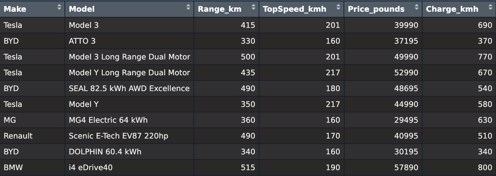
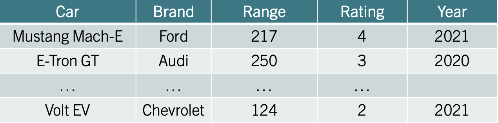

1 Descriptive Stats I
Understanding the nature and classification of data is crucial for effective analysis and decision-making. Data are the building blocks of insights, providing a foundation for businesses, researchers, and policymakers to make informed choices. How we collect and categorize data significantly impacts how it is analyzed and interpreted. Below we highlight key types of data and their unique characteristics to help you get started with data analysis.
1.1 Data and Types of Data
Let’s start by defining data and the types of data structures that you might encounter when conducting analysis. Data are facts and figures collected, analyzed and summarized for presentation and interpretation. Data can be classified as:
Cross Sectional Data refers to data collected at the same (or approximately the same) point in time. Ex: NFL standings in 1980 or Country GDP in 2015.
Time Series Data refers to data collected over several time periods. Ex: U.S. inflation rate from 2000-2010 or Tesla deliveries from 2016-2022.
Structured Data resides in a predefined row-column format (tidy). Ex: spreadsheet data.
Unstructured Data do not conform to a pre-defined row-column format. Ex: Text, video, and other multimedia.
Example: Consider a retail store analyzing its sales performance. If the store collects data on the total revenue generated by each location on Black Friday, it is cross-sectional data. On the other hand, if the store tracks weekly sales for the past year to observe trends, it is time series data. Structured data, like sales figures stored in spreadsheets, allows for easy comparison and analysis. Meanwhile, customer feedback gathered from social media posts and video reviews represents unstructured data, requiring advanced tools to extract meaningful insights.
1.2 Data Sets
A data set contains all data collected for a particular study. Understanding the structure the data set aids in communicating findings to stakeholders clearly and effectively. Data sets are composed of:
Elements are the entities on which data are collected. Ex: Football teams, countries, and individuals.
Variables are a set of characteristics collected for each element. Ex: Goals scored, GDP, weight.
Observations are the set of measurements obtained for a particular element. Ex: Salah, 20 (goals), 15 (assists). US, 2.3 (inflation), 4.5% (federal interest rate).
| Elements | Variable 1 | Variable 2 |
|---|---|---|
| Element 1 | # | # |
| Element 2 | # | # |
| Element 3 | # | # |
| … | … | … |
Example: Consider the dataset on electric vehicles (EV’s) displayed below:
In this data set, each row represents an electric vehicle model, making the elements the specific EV models rather than the manufacturers. The variables collected for each model include:
- Make: The manufacturer of the EV.
- Model: The specific name of the EV model.
- Range_km: Driving range in kilometers on a full charge.
- TopSpeed_kmh: Maximum speed in km/h.
- Price_pounds: Price in pounds (£).
- Charge_kmh: Charging speed in kilometers per hour.
An example observation is “Tesla Model 3,” with the following data: Make: Tesla, Model: Model 3, Range_km: 415, TopSpeed_kmh: 201, Price_pounds: 39,990, Charge_kmh: 690.
1.3 Scales of Measurement
Understanding scales of measurement is crucial for analyzing and interpreting data effectively in business. By distinguishing between categorical (e.g., marital status, satisfaction ratings) and numerical data (e.g., profits, prices), you’ll know what methods to use for analysis. Knowing whether data is nominal, ordinal, interval, or ratio ensures your analysis and conclusions are accurate and relevant.
The scales of measurements determine the amount and type of information contained in each variable. In general, variables can be classified as categorical or numerical.
Categorical (qualitative) data includes labels or names to identify an attribute of each element. Categorical data can be nominal or ordinal.
With nominal data, the order of the categories is arbitrary. Ex: Marital Status, Race/Ethnicity, or NFL division.
With ordinal data, the order or rank of the categories is meaningful. Ex: Rating, Difficulty Level, or Spice Level.
Numerical (quantitative) include numerical values that indicate how many (discrete) or how much (continuous). The data can be either interval or ratio.
With interval data, the distance between values is expressed in terms of a fixed unit of measure. The zero value is arbitrary and does not represent the absence of the characteristic. Ratios are not meaningful. Ex: Temperature or Dates.
With ratio data, the ratio between values is meaningful. The zero value is not arbitrary and represents the absence of the characteristic. Ex: Prices, Profits, Wins.
Example: Let’s keep using the EV example. Consider the new data set below:

The variables can be classified as follows: - Car (Categorical - Nominal), consists of names of cars, which are labels used to identify each row. The order of these names does not matter, making it nominal data. - Brand (Categorical - Nominal) represents the manufacturer of the car (e.g., Ford, Audi). These are labels with no inherent order, making it nominal data. - Range (Numerical - Ratio), refers to the car’s driving range in miles. It is numerical and ratio because it has a meaningful zero (a car with zero range cannot move), and ratios are meaningful (e.g., a car with 250 miles range has double the range of one with 125 miles). - Rating (Categorical - Ordinal) represents a rank or score (e.g., 4, 3, 2). The order matters, as higher ratings indicate better performance. However, the intervals between ratings are not consistent, so it is ordinal data. - Year (Numerical - Interval) represents a point in time. While numerical, it is interval data because the zero point is arbitrary (e.g., year 0 does not indicate the “absence” of time), and ratios are not meaningful (e.g., 2020 is not “twice as late” as 1010).
1.4 Exercises
The following exercises will help you test your knowledge on the Scales of Measurement. They will also allow you to practice some basic data “wrangling” in R. In these exercises you will:
Identify numerical and categorical data.
Classify data according to their scale of measurement.
Sort and filter data in R.
Handle missing values (NA’s) in R.
Answers are provided below. Try not to peak until you have a formulated your own answer and double checked your work for any mistakes.
Exercise 1
A bookstore has compiled data set on their current inventory. A portion of the data is shown below:
| Title | Price | Year Published | Rating |
|---|---|---|---|
| Frankenstein | 5.49 | 1818 | 4.2 |
| Dracula | 7.60 | 1897 | 4.0 |
| … | … | … | … |
| Sleepy Hollow | 6.95 | 1820 | 3.8 |
- Which of the above variables are categorical and which are numerical?
Answer
The “Title” variable represents the names of books. Therefore, this is a categorical variable.
“Price” represents the cost of each book in a numeric format, making it a numerical variable.
“Year Published” indicates the publication year of each book. It is numerical.
If “Rating” represents a numerical score based on a continuous scale (e.g., average user ratings on a platform like Goodreads), it is numerical because arithmetic operations like averaging or comparing differences are meaningful. If “Rating” represents predefined categories (e.g., “Excellent,” “Good,” “Fair,” “Poor”) or is interpreted as ranks without meaningful differences between values, it would be categorical.
- What is the measurement scale of each of the above variable?
Answer
The measurement scale is nominal for “Title” since these are labels used to identify each book and do not have a numerical meaning or order.
If “Rating” represents a score (e.g., 4.2, 4.0) given to each book, it is numerical and could be considered interval data because the scale represents a meaningful difference, but it may not have an absolute zero or meaningful ratios (e.g., a book rated 4.0 is not “twice as good” as one rated 2.0).
“Price” is a measurable quantity with a meaningful zero (e.g., a book priced at $0 means it is free), making it ratio data.
“Year” is interval data because the zero point is arbitrary (year 0 does not represent the absence of time) and differences between years are meaningful (e.g., 1897 - 1818 = 79 years).
Exercise 2
A car company tracks the number of deliveries every quarter. A portion of the data is shown below:
| Year | Quarter | Deliveries |
|---|---|---|
| 2016 | 1 | 14800 |
| 2016 | 2 | 14400 |
| … | … | … |
| 2022 | 3 | 343840 |
- What is the measurement scale of the Year variable? What are the strengths and weaknesses of this type of measurement scale?
Answer
The variable Year is measured on the interval scale because the observations can be ranked, categorized and measured when using this kind of scale. However, there is no true zero point so we cannot calculate meaningful ratios between years.
- What is the measurement scale for the Quarter variable? What is the weakness of this type of measurement scale?
Answer
The variable Quarter is measured on the ordinal scale, even though it contains numbers. It is the least sophisticated level of measurement because if we are presented with nominal data, all we can do is categorize or group the data.
- What is the measurement scale for the Deliveries variable? What are the strengths of this type of measurement scale?
Answer
The variable Deliveries is measured on the ratio scale. It is the strongest level of measurement because it allows us to categorize and rank the data as well as find meaningful differences between observations. Also, with a true zero point, we can interpret the ratios between observations.